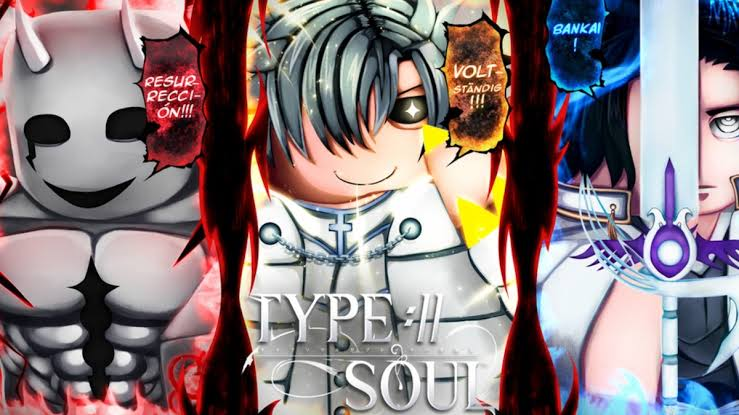

BUILD GUIDES
guidesEvery blade, bow, and mask hides a different path to power. Pick a race below to see how the veterans allocate their stats and climb toward Bankai, Vollständig, or Resurrección.
 BANKAI
BANKAI
SOUL REAPER
reaperZanpakuto in hand, Flash Step under your feet. Soul Reaper is the "respect race" for a reason — slow to master, unforgiving to fight, and built around closing distance and never letting go. Every point you spend should push you closer to Bankai.
-
EARLY GAME
Grind Zanpakuto proficiency before anything else. Sealed form is weak, so spar in low-stakes threads for free reps.
-
MID GAME
Unlock Shikai and commit to it. Pair with a Flash Step build so you dictate engagement range instead of getting kited.
-
LATE GAME
Bankai is the finish line, not a shortcut. Stack DESTRUCTION until unlock, then shift into VITALITY to survive using it.

VOLLSTÄNDIGQUINCY
quincyQuincy don't win fights, they avoid losing them. Spirit bows, kiting, and just enough cheese to make melee mains uninstall. If you'd rather out-position someone than out-trade them, this is the build.
-
EARLY GAME
Learn reishi manipulation basics and practice drawing your bow mid-movement. Standing still to shoot gets Quincy killed.
-
MID GAME
Build out your Hirenkyaku footwork so you can kite Soul Reapers indefinitely. This is where the "cheese" reputation is earned.
-
LATE GAME
Push toward Vollständig once FORTUNE is comfortably ahead of ORDER. It burns fast — pop it once the fight is already decided.
ARRANCAR
arrancarArrancar mix melee and Cero pressure into one unstable hybrid kit — high ceiling, high risk, and a Resurrección that can swing a fight in one exchange if you time it right.
-
EARLY GAME
Master Sonido and basic Cero control before touching Resurrección. A whiffed Cero just tells everyone where you are.
-
MID GAME
Alternate melee pressure with Bala bursts to keep your ENTROPY meter climbing without overextending.
-
LATE GAME
Save Resurrección as a finisher, not an opener. Pop it once UNBOUND is high enough to hold the form through a full exchange.